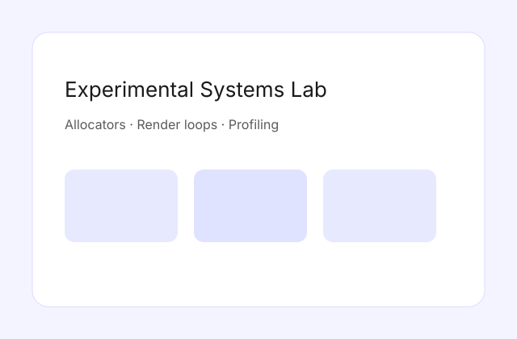

A sandbox repository for testing systems ideas: a custom allocator, a CPU ray caster, and small profiling tools built to understand performance trade-offs.
Each experiment is scoped to a single concept so I can learn quickly and document what matters.
View on GitHub